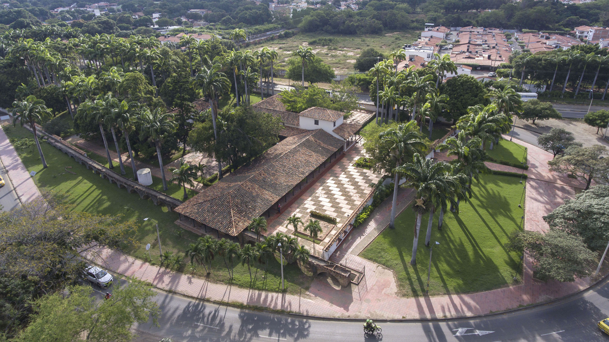
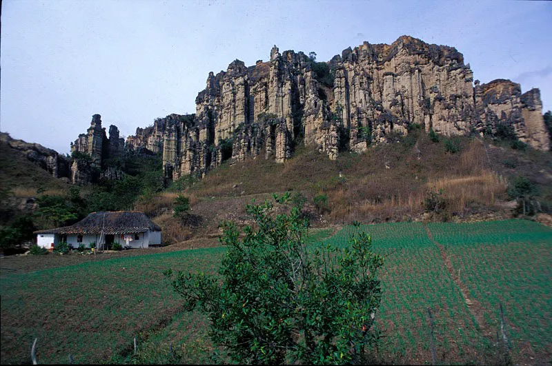
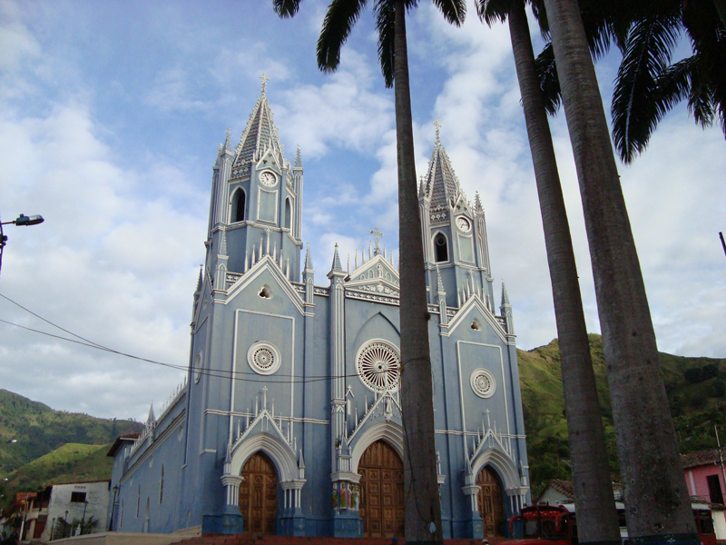

Región: Nor-Oriental
En esta Casa nació el General Francisco de Paula Santander. Aquí te contamos la historia de Colombia, la cultura nortesantandereana y de la región. Es este un lugar de puertas abiertas para aprender, disfrutar y compartir la cultura y las tradiciones de la frontera entre Colombia y Venezuela."
El área natural única Los Estoraques es una de las más pequeñas áreas protegidas de Colombia, abarcando tan solo 6,4 km² de superficie. Considerada única en su tipo por sus bellos paisajes quebradizos y erosionados
Salazar de Las Palmas es un municipio colombiano, ubicado en la región central del departamento de Norte de Santander.Es llamada la Cuna del café en Colombia, ya que por esta región se introdujo el grano en el país.
Es un municipio de Colombia ubicado en el departamento de Norte de Santander, en el nordeste del país, en la frontera con Venezuela y a orillas del río que lleva su mismo nombre.